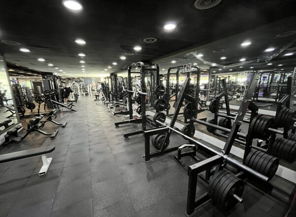
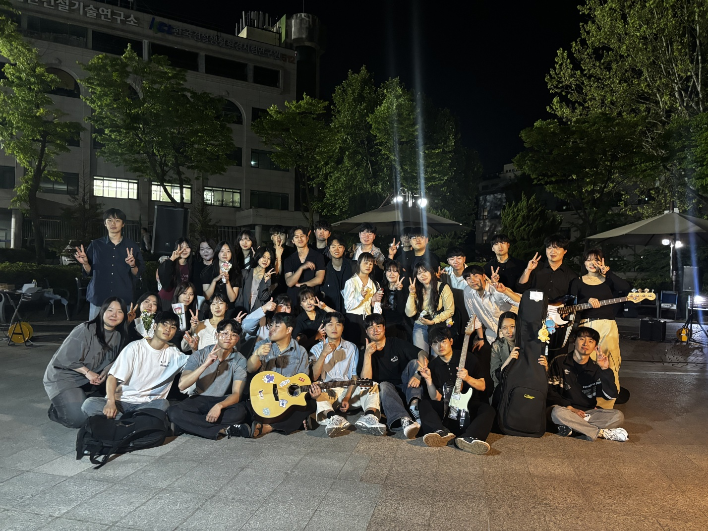

자기 소개
Self Introduction
안녕하세요!
저는
강원대학교
에 재학 중인 학생입니다. 전공은
컴퓨터공학
이고 웹 개발과 보안에 관심을 가지고 공부를 하고 있습니다.
많이 부족하고 전공에 어려움을 느끼고 있지만 최선을 다해 배워보려고 합니다.
또한 현재 강원대학교의 중앙동아리 기타치노의 회장을 맡고 있습니다.
기타치노는 어쿠스틱 밴드 동아리로 다양한 장르의 음악을 하는 동아리입니다.
본가는 경기도 고양시이며 현재는 춘천에 거주하고 있습니다.
Hello!
I'm a student at
Kangwon National University.
My major is
Computer Engineering
, and I'm studying with a strong interest in web development and cybersecurity.
Although I still have a lot to learn and sometimes find my major challenging, I’m doing my best to
improve.
I'm also the president of Guitarqino, a central club at Kangwon National University.
Guitarqino is an acoustic band club that performs music in various genres.
My hometown is Goyang, Gyeonggi-do, and I currently live in Chuncheon.
나의 취미
My Hobbies
운동 (Fitness)
작년 8월부터 헬스장을 다니기 시작하면서 운동을 새로운 취미로 갖게 되었습니다. 처음에는 익숙하지 않았지만, 점차 재미가 붙었고 현재까지도 꾸준히 운동을 이어가고 있습니다. 시간이 걸리긴 하지만, 나의 몸이 조금씩 변화하는 모습을 보며 뿌듯함과 성취감을 느끼고 있습니다. 앞으로도 건강한 생활을 위해 계속해서 운동을 해나갈 계획입니다.
I started going to the gym in August of last year, and since then, fitness has become a new hobby of mine. At first, it felt unfamiliar, but I gradually found it enjoyable and have been working out consistently ever since. Although it takes time, I feel proud and accomplished as I see my body slowly changing. I plan to continue exercising to maintain a healthy lifestyle.
음악 (Music)
어렸을 때부터 피아노를 배워 한동안은 클래식 피아노 곡을 연주하곤 했습니다. 지금은 동아리 활동을 하며 밴드 음악을 연주하는 것에 더 집중하고 있습니다. 동아리 부원들과 함께 합주를 하며 호흡을 맞춰가는 과정이 매우 재미있고 보람차다고 느낍니다. 최근에는 함인섭 광장에서 밴드 공연을 하기도 했고, 앞으로도 다양한 음악을 즐기고 싶습니다.
I learned to play the piano from a young age and used to perform classical pieces for quite some time. These days, I focus more on playing band music through club activities at school. I find it really fun and rewarding to rehearse with my club members and work together in harmony. Recently, we even had the opportunity to perform at Ham In Seop Square, and I hope to continue enjoying music in many different ways.
춘천 맛집
Chuncheon Foodie Spot
원조숯불닭불고기집
이 가게는 철판 닭갈비가 아닌 숯불 닭갈비 전문점입니다. 철판 닭갈비는 양념의 맛에 닭 본연의 맛이 묻히는 반면, 숯불 닭갈비는 숯 향과 함께 쫄깃하고 고소한 닭고기 본연의 맛을 제대로 느낄 수 있습니다. 비린내 없이 깔끔한 맛이 인상적이며, 아주 뛰어나진 않지만 조화롭고 균형 잡힌 맛이 돋보입니다. 맛은 양념, 소금, 간장 세 가지로 나뉘며, 간장 맛으로 시작해 소금 맛으로 배를 채우고, 마지막엔 양념 닭갈비와 막국수 혹은 흰쌀밥으로 마무리하는 것을 추천합니다.
This restaurant specializes in charcoal-grilled dak-galbi (Korean spicy chicken), not the typical iron plate version. While iron plate dak-galbi often masks the chicken’s natural flavor with strong seasoning, the charcoal-grilled version here lets you truly savor the tender, savory, and smoky taste of the chicken itself—without any unpleasant odor. It may not be a life-changing dish, but the flavors are well-balanced and harmonious, making it a solid choice. There are three seasoning options: soy sauce, salt, and spicy. We recommend starting with soy sauce, filling up with the salt-flavored version, and finishing with the spicy dak-galbi paired with either makguksu (buckwheat noodles) or a bowl of white rice.
밀두레
밀두레는 춘천에 위치한 수제비 전문 맛집입니다. 대표 메뉴인 들깨수제비는 고소한 들깨 향과 진한 국물 맛이 어우러져, 국자를 멈출 수 없게 만듭니다. 김치수제비, 기본 수제비, 파전, 비빔국수 등 다양한 메뉴를 맛보았지만, 하나같이 정성이 느껴지고 맛의 완성도가 높았습니다. 어떤 메뉴든 자세한 설명이 필요 없을 정도로 훌륭하며, 따뜻하고 푸근한 분위기 속에서 한 끼를 제대로 즐길 수 있는 곳입니다. 춘천을 방문한다면 꼭 들러보시길 추천합니다.
Mildure is a must-visit restaurant in Chuncheon, known for its handmade Korean-style dumpling soup (sujebi). The signature dish, perilla seed sujebi, features a rich and nutty broth that's so flavorful, you’ll find yourself going back for sip after sip. I’ve tried nearly every item on the menu — including the kimchi sujebi, classic sujebi, crispy pajeon (green onion pancake), and spicy bibim-guksu — and each dish was crafted with care and packed with flavor. The food feels homemade yet refined, and the comforting atmosphere makes the experience even more enjoyable. If you're ever in Chuncheon, I highly recommend stopping by for a hearty, satisfying meal that truly warms the soul.